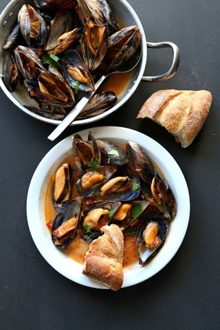

Blåskjell
Blåskjell er utbredt langs hele norskekysten. De største forekomstene finnes nord til Trondheimsfjorden, i beskyttede områder og i fjordstrøk med påvirkning av brakkvann.
Oppskrift (4 personer)
2 kg blåskjell
2 røde chilier, uten kjerner
100 g olivenolje
1 ts karri
2 ½ dl hvitvin
2 løk, finhakket
10 g revet fersk ingefær
1 boks skåldede tomater
2 ½ dl matfløte
2 ss grovhakket bladpersille
2 hvitløksfedd
Skyll og børst blåskjellene i kaldt vann. Har de sprekker/revner eller ikke lukker seg når du banker dem lett mot kjøkkenbenken skal du kaste dem. Hell hvitvinen i en gryte, tilsett blåskjellene på høy varme, sett lokk på og kok opp. Kok blåskjellene i et par minutter mens du rister gryten flere ganger til skjellene har åpnet seg. Sikt væsken gjennom en sikt. Kast ev. uåpnede skjell og hold dem varme i den avsilte væsken.
